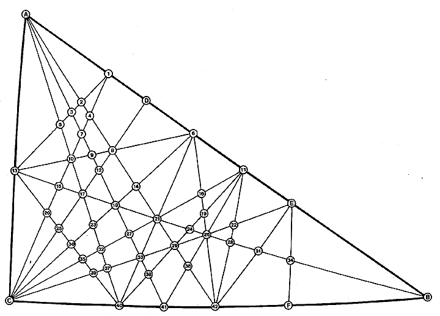

|  |
| Fig. 987.132F Net Diagram of Angles and Edges for Basic Disequilibrium 120 LCD Triangle: This is a detail of the basic spherical triangle shown shaded in Fig. 987.132E and at Fig. 901.03. It is the key to the trigonometric tables for the spherical central angles, the spherical face angles, the planar edge lengths, and the planar face angles presented at Table 987.132G. |